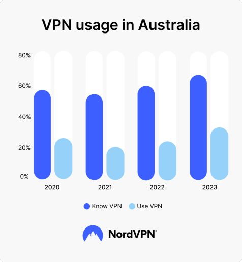

According to a recent survey, approximately 31% of internet users worldwide use a VPN. This number has been steadily increasing over the years as more people become aware of the importance of online privacy and security.
In Australia around 30% of internet users reported using a VPN in 2023. This number is expected to grow as more people become concerned about their online privacy and security.
VPN usage is highest among younger demographics, with 68% of VPN users aged 16-34 reporting that they use a VPN. It is due to the increase in awareness in cybersecurity due to more modern education and videos.
According to reasearch half of the VPN users use VPNs to browse through better entertainment. This can be due to the content not being available in their region. An example is people trying to find ways to watcg new shows in Netflix.